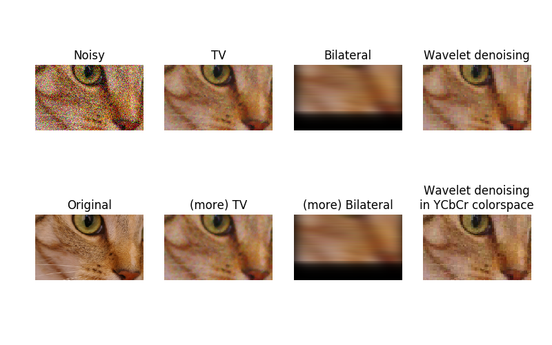

Note
Click here to download the full example code
In this example, we denoise a noisy version of a picture using the total variation, bilateral, and wavelet denoising filters.
Total variation and bilateral algorithms typically produce “posterized” images with flat domains separated by sharp edges. It is possible to change the degree of posterization by controlling the tradeoff between denoising and faithfulness to the original image.
The result of this filter is an image that has a minimal total variation norm, while being as close to the initial image as possible. The total variation is the L1 norm of the gradient of the image.
A bilateral filter is an edge-preserving and noise reducing filter. It averages pixels based on their spatial closeness and radiometric similarity.
A wavelet denoising filter relies on the wavelet representation of the image. The noise is represented by small values in the wavelet domain which are set to 0.
In color images, wavelet denoising is typically done in the YCbCr color space as denoising in separate color channels may lead to more apparent noise.
Out:
Estimated Gaussian noise standard deviation = 0.1491905265362912
import matplotlib.pyplot as plt
from skimage.restoration import (denoise_tv_chambolle, denoise_bilateral,
denoise_wavelet, estimate_sigma)
from skimage import data, img_as_float
from skimage.util import random_noise
original = img_as_float(data.chelsea()[100:250, 50:300])
sigma = 0.155
noisy = random_noise(original, var=sigma**2)
fig, ax = plt.subplots(nrows=2, ncols=4, figsize=(8, 5),
sharex=True, sharey=True)
plt.gray()
# Estimate the average noise standard deviation across color channels.
sigma_est = estimate_sigma(noisy, multichannel=True, average_sigmas=True)
# Due to clipping in random_noise, the estimate will be a bit smaller than the
# specified sigma.
print("Estimated Gaussian noise standard deviation = {}".format(sigma_est))
ax[0, 0].imshow(noisy)
ax[0, 0].axis('off')
ax[0, 0].set_title('Noisy')
ax[0, 1].imshow(denoise_tv_chambolle(noisy, weight=0.1, multichannel=True))
ax[0, 1].axis('off')
ax[0, 1].set_title('TV')
ax[0, 2].imshow(denoise_bilateral(noisy, sigma_color=0.05, sigma_spatial=15,
multichannel=True))
ax[0, 2].axis('off')
ax[0, 2].set_title('Bilateral')
ax[0, 3].imshow(denoise_wavelet(noisy, multichannel=True))
ax[0, 3].axis('off')
ax[0, 3].set_title('Wavelet denoising')
ax[1, 1].imshow(denoise_tv_chambolle(noisy, weight=0.2, multichannel=True))
ax[1, 1].axis('off')
ax[1, 1].set_title('(more) TV')
ax[1, 2].imshow(denoise_bilateral(noisy, sigma_color=0.1, sigma_spatial=15,
multichannel=True))
ax[1, 2].axis('off')
ax[1, 2].set_title('(more) Bilateral')
ax[1, 3].imshow(denoise_wavelet(noisy, multichannel=True, convert2ycbcr=True))
ax[1, 3].axis('off')
ax[1, 3].set_title('Wavelet denoising\nin YCbCr colorspace')
ax[1, 0].imshow(original)
ax[1, 0].axis('off')
ax[1, 0].set_title('Original')
fig.tight_layout()
plt.show()
Total running time of the script: ( 0 minutes 15.214 seconds)
 Source
Source